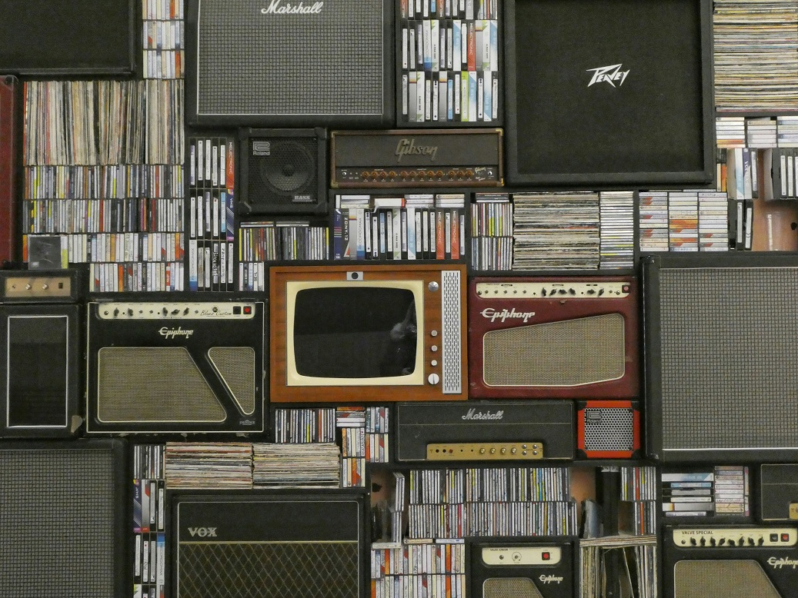
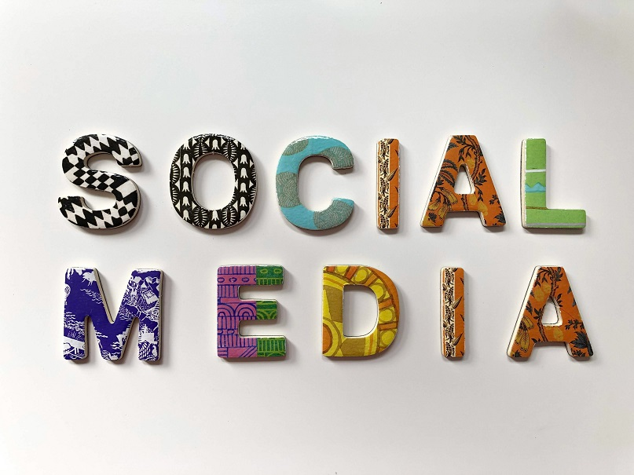
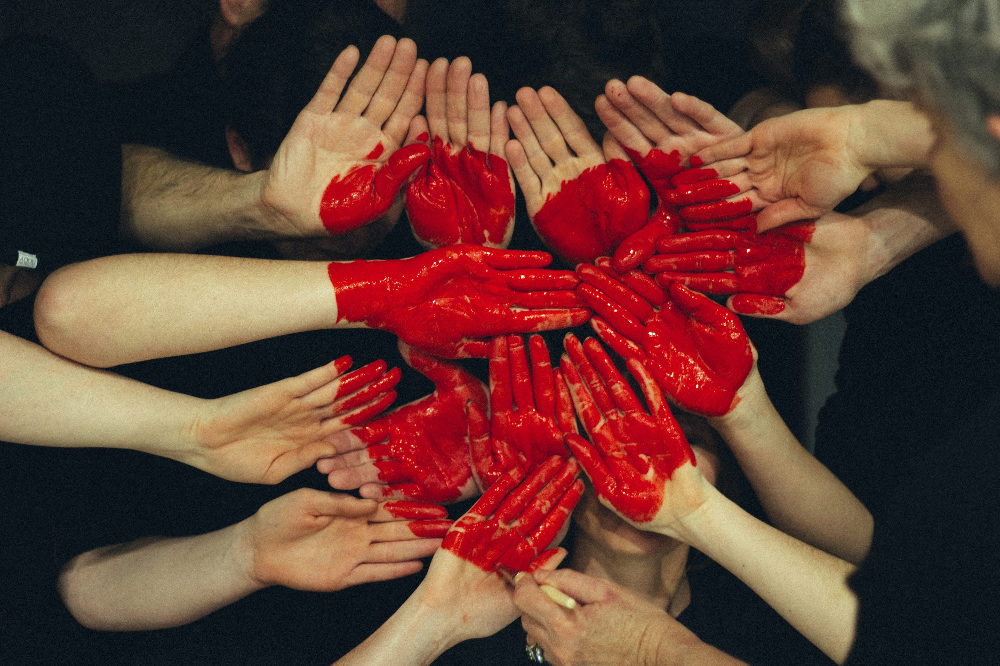

Música
Minha segunda companheira, após meu pequeno. Amor à primeira vista, amizade de infância. Só escuto, bastante. Canto muito durante tarefas domésticas.

Amigos
Distantes. Maior contato por mídias sociais. Os vejo todos os dias, na telinha do meu celular. Rs. De vez em quando, em encontros rápidos coincidentes.

Família
Mãe solteira de um arteirinho de 3 anos, o Belquior. Já fui solo, hoje solteira. Vida corrida. Vovó e vovô presentes em alguns finais de semana.
Desenvolvedor Web
Ansiosamente feliz e felizmente ansiosa. Coding, praying, traveling, eating, loving... For a future. A hope beautiful future.